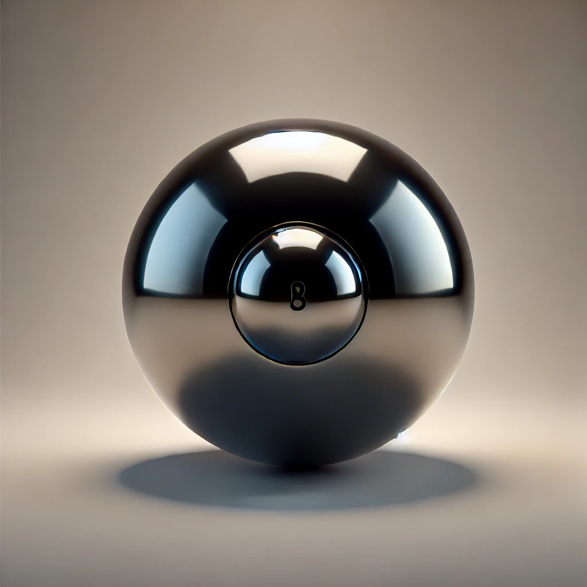
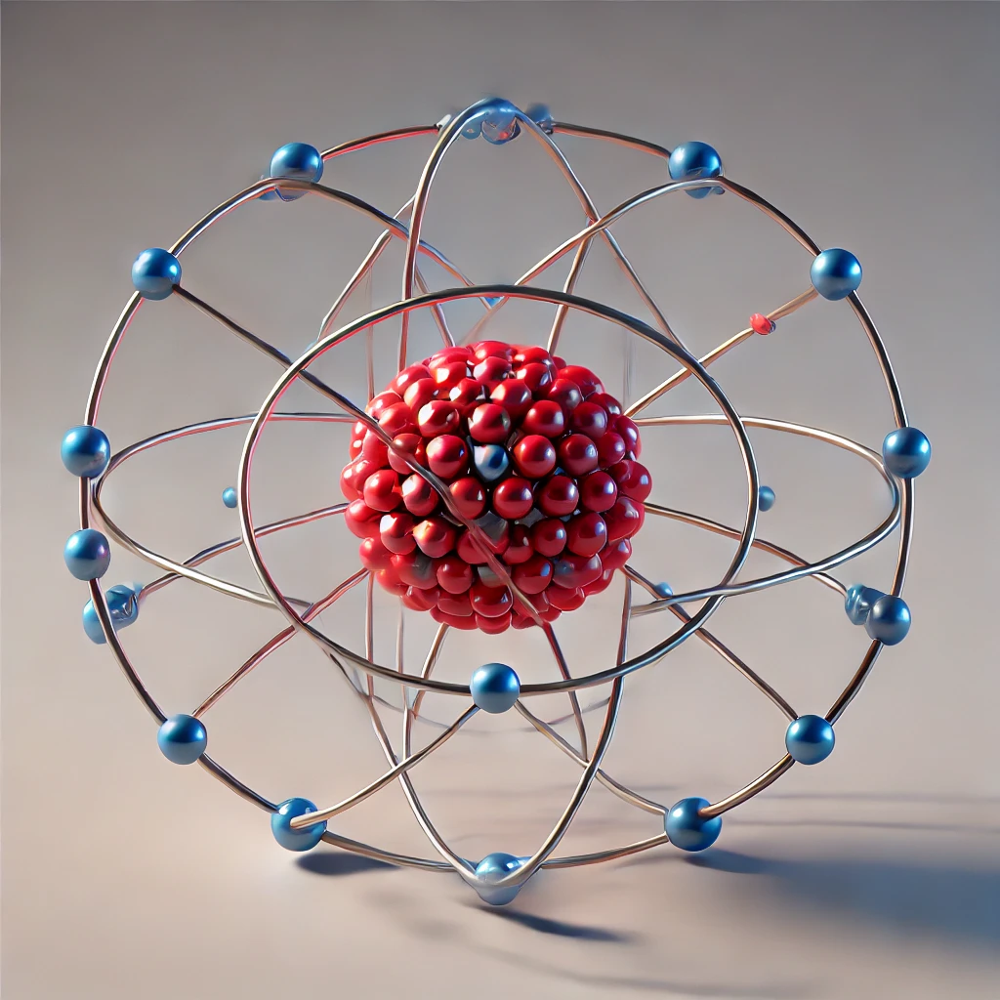
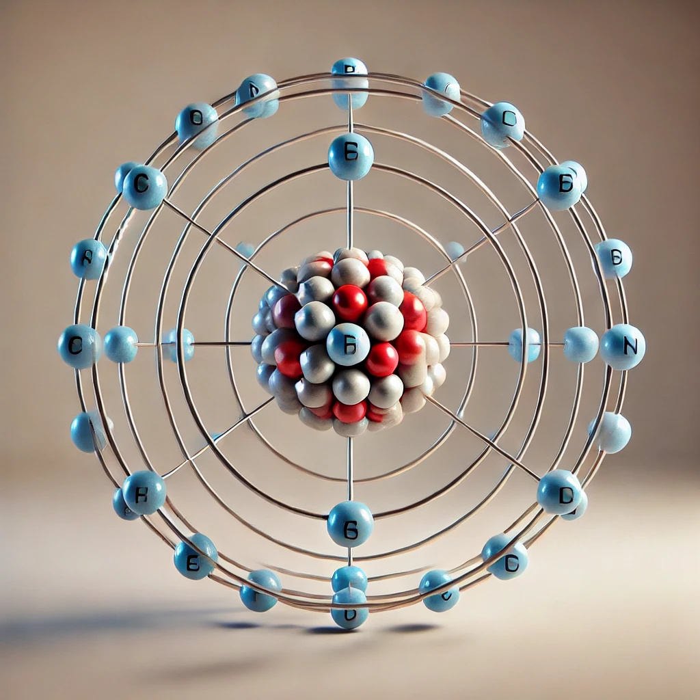

یکی از وجوه مشترک فیزیک و معماری، اندازهگیری است. معماران هنرمند ایرانی از صدها سال پیش با بهرهگیری از روشها و فنون اندازهگیری، اثرهای بدیع و ماندگاری به یادگار گذاشتهاند.
اگر به دنبال ردپای فیزیک در زندگی خود باشید، لازم نیست جای خیلی دوری بروید؛ زیرا فیزیک با زندگی روزانهی ما عجین شدهاست. وسایل برقی، خودروها، گوشیهای تلفن همراه و بسیاری از وسایل و ابزارهای اطراف ما، با بهرهگیری از اصول و قوانین فیزیکی ساخته شدهاند. فیزیکدانان، گستره وسیعی از پدیدهها را بررسی میکنند. این گستره، اندازههای خیلی کوچک مانند اتمها و ذرات سازنده آنها را در بر میگیرد و همچنین اندازههای خیلی بزرگ مانند کهکشانها و اجزای تشکیلدهنده آنها را نیز شامل میشود.
در این فصل، پس از آشنایی با فیزیک و نظریههای فیزیکی، به اهمیت مدلسازی در فیزیک پرداخته و با کمیتهای فیزیکی، دستگاه بینالمللی یکاها و دقت در اندازهگیری آشنا خواهید شد. در پایان فصل نیز نگاهی به چگالی و کاربردهای آن خواهد شد.
مطالعه و یادگیری فیزیک به این دلیل اهمیت دارد که فیزیک از بنیادیترین دانشها و شالودهٔ تمامی مهندسیها و فناوریهایی است که به طور مستقیم یا غیرمستقیم در زندگی ما نقش دارند. فیزیکدانان، پدیدههای گوناگون طبیعت را مشاهده میکنند و میکوشند الگوها و نظمهای خاصی میان این پدیدهها بیابند. دانشمندان فیزیک برای توصیف و توضیح پدیدههای مورد بررسی، اغلب از قانون، مدل و نظریهٔ فیزیکی استفاده میکنند. از آنجا که فیزیک، علمی تجربی است، لازم است این قوانین، مدلها و نظریههای فیزیکی توسط آزمایش مورد آزمون قرار گیرند. مدلها و نظریههای فیزیکی در طول زمان همواره معتبر نیستند و ممکن است دستخوش تغییر شوند. به بیان دیگر همواره این امکان وجود دارد که نتایج آزمایشهای جدید منجر به بازنگری مدل یا نظریهای شود و حتی ممکن است نظریهای جدید جایگزین آن شود. مثلاً در دهههای آغازین قرن گذشته، نظریهٔ اتمی با توجه به مشاهدهها و کسب اطلاعات جدید در خصوص رفتار اتمها، بارها اصلاح شد (شکل 1-1).

- دالتون، 1807 میلادی: مدل توپ بیلیارد
- تامسون، 1903 میلادی: مدل کیک کشمشی

- رادرفورد، 1911 میلادی: مدل هستهای

- بور، 1913 میلادی: مدل سیارهای

- شرودینگر، 1926 میلادی: مدل ابر الکترونی
آزمایش و مشاهده در فیزیک اهمیت زیادی دارند؛ اما آنچه بیش از همه در پیشبرد و تکامل علم فیزیک نقش ایفا میکند، تفکر نقادانه و اندیشهورزی فعال فیزیکدانان نسبت به پدیدههایی است که با آنها مواجه میشوند.
توجه
مطالب تیتر قرمز جزء ارزشیابی نیست.
خوب است بدانید
واژه فیزیک، که ریشههایی در یونان باستان دارد، به معنای "شناخت طبیعت" است. تا جایی که تاریخ علمی ما نشان میدهد، فیلسوفان از دورانهای گوناگون پرسشها و مباحثی در زمینه طبیعت مطرح کردهاند. این فیلسوفان از سدههای هفتم و پنجم قبل از میلاد مسیح در یونان و سپس در مناطقی مانند مقدونیه، سوریه، مصر، و به ویژه در شهر اسکندریه فعال بودهاند. کارهای ارشمیدس و دیگر دانشمندان یونان باستان به همین دورهها برمیگردد. بررسیهای تاریخنگاران علم نشان میدهد که روش ارشمیدس به روشهای علمی امروزی نزدیک بوده است.
پس از ظهور و گسترش اسلام، دانشمندان مسلمان و به خصوص ایرانی مانند ابوریحان بیرونی (973–1048 م), ابن هیثم (965–1040 م), خواجه نصیرالدین طوسی (1201–1274 م), و ابوعلی سینا (980–1037 م) در زمینههای نجوم، نورشناسی و مکانیک دانش فیزیک را گسترش دادند. بعدها، بخشی از این دانش پایهای برای کارهای گالیله و دیگر دانشمندان شد.
در کتابهای تاریخ علم، روایت شده است که گالیله جسمهای سبک و سنگین را از بالای برج کج پیزا رها کرد تا بررسی کند آیا زمان سقوط آنها یکسان است یا متفاوت. گالیله به این نتیجه رسید که تنها یک بررسی تجربی میتواند به این پرسش پاسخ دهد. او با توجه به نتایج آزمایشهای خود، به این اصل رسید که شتاب جسم در حال سقوط، مستقل از جرم آن است.
فیزیک، پایه و اساس تمامی مهندسیها و فناوریها است. هیچ مهندسی نمیتواند بدون درک قانونهای اساسی فیزیک، یک تلویزیون با صفحه تخت، یک فضاپیمای میانسیارهای، یک لامپ کم مصرف LED یا حتی یک ابزار ساده را طراحی کند. فیزیک شالودهای است که بر تمامی دستاوردهای دانش و فناوریهای نوین قرار دارد.
Juno کاوشگر فضایی
1. Juno (جونو): کاوشگری است که ناسا به سوی مشتری (Jupiter)، بزرگترین سیاره منظومه شمسی، پرتاب کرده است. پس از پنج سال، در تابستان 1395 به مدار نزدیک این سیاره رسید. Juno اطلاعاتی در مورد ویژگیهای مغناطیسی و گرانشی مشتری به زمین میفرستد.
شتابدهنده ذرات
2. شتابدهنده ذرات: تونلی به طول 27 کیلومتر که در عمق 175 متری زمین و در مرز فرانسه و سوئیس قرار دارد. بیش از 3000 دانشمند و فیزیکدان در این مرکز پژوهشی مشغول به کار هستند. بزرگترین دستاورد، کشف ذره بوزون هیگز است.
سامانه موقعیتیابی جهانی (GPS)
3. GPS (سامانه موقعیتیابی جهانی): مکان اجسام را با دقت قابل ملاحظهای روی زمین پیدا میکند. کارکرد این سامانه براساس نظریه نسبیت اینشتین است.
ترابری مگلو (Maglev)
4. Maglev (ترابری مگلو): قطاری است که با استفاده از پیچهای ابررسانا در زیر خود، به صورت شناور حرکت میکند و تندی بیش از 400 کیلومتر در ساعت دارد.
میکروسکوپ الکترونی
5. SEM (میکروسکوپ الکترونی روبشی): در این نوع میکروسکوپها، به جای نور مرئی، از باریکهای از الکترونها برای تصویربرداری استفاده میشود.
واحد پردازش مرکزی (CPU)
6. CPU (واحد پردازش مرکزی): متشکل از چندین میلیارد ترانزیستور کوچک است که در یک محفظه سرامیکی جای گرفتهاند.
افزون بر فهرست بالا، شما و اعضای گروه خود میتوانید فهرست دیگری از کاربردهای فیزیک در فناوری تهیه کنید. این فهرست میتواند به صورت پوستر، پاورپوینت، فیلمهای کوتاه و ... تهیه و ارائه شود.